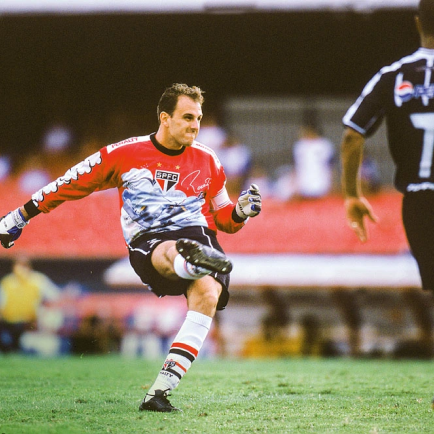
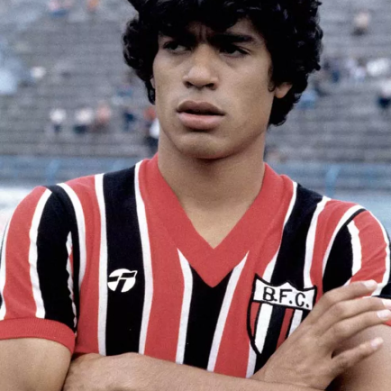
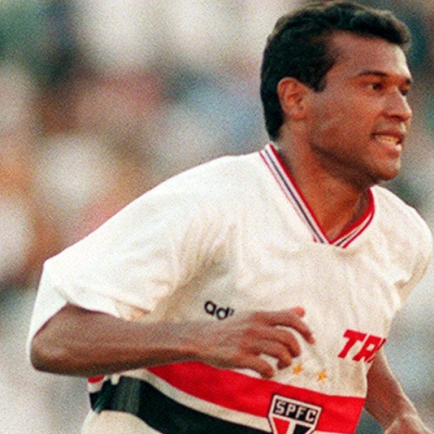
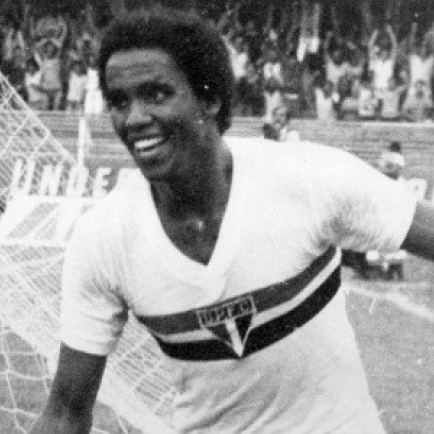

São Paulo
São Paulo Futebol Clube é um clube poliesportivo brasileiro da cidade de São Paulo, capital do estado homônimo. Foi fundado em 25 de janeiro de 1930,[1] tendo interrompido suas atividades em maio de 1935, e as retomado em dezembro do mesmo ano.
Títulos
Campeonato Brasileiro: 6
Campeonato Paulista: 22
Torneio Rio–São Paulo: 1
Copa Libertadores da América : 3
Copa Sul-Americana : 1
Mundial: 3
Ídolos
- 
- 
- 
- 
Ceni
Revelado pelo Sinop-MT, Rogério Ceni chegou ao Morumbi com apenas 17 anos e foi fiel ao clube até o fim da carreira, atuando durante toda sua trajetória com a camisa do São Paulo. Foram 25 anos de clube, de 1990 até 2015, contando desde o fim da trajetória como juvenil e toda a sua carreira como profissional profissional. A estreia de Rogério Ceni pelo São Paulo foi em junho de 1993, mas ele só assumiu a titularidade em 1997, com a saída do goleiro Zetti. Apesar disso, estava presente no grupo que foi campeão da Libertadores e do Mundial em 1993. Depois, foi titular absoluto nas grandes conquistas do Tricolor na década de 2000. Capitão e decisivo, Rogério Ceni coleciona recordes e títulos com a camisa do São Paulo. É o jogador que mais atuou, com 1.237 jogos disputados, e o recordista de temporadas disputadas pelo clube paulista.
Raí
Irmão de Sócrates, craque da Seleção Brasileira nos anos 80, e um dos maiores jogadores da história do principal rival do São Paulo, o Corinthians, Raí é certamente um dos maiores ídolos da torcida do São Paulo. Seguindo os passos do irmão, Raí começou no futebol profissional no Botafogo de Ribeirão Preto, clube da cidade em que nasceu, mas foi no São Paulo em que mostrou todo o seu potencial. O meia chegou ao tricolor do Morumbi em 1987 e não demorou muito para começar a conquistar títulos com a camisa do São Paulo. Já em 1989, levantou seu primeiro troféu, o Campeonato Paulista de 1989. Em sua primeira passagem, Raí permaneceu no São Paulo até 1993 e foi o grande nome das principais conquistas do clube durante esse período. Vestindo a camisa 10, Raí ganhou tudo nessa passagem: Campeonato Paulista (1989, 1991 e 1992), Campeonato Brasileiro (1991), Copa Libertadores (1992 e 1993) e Mundial de Clubes (1992). Após deixar o Tricolor, em 1993, para vestir a camisa do PSG, clube em também fez história e se tornou ídolod, Raí retornou ao São Paulo em 1998, para encerrar a carreira. Ainda deu tempo de mais conquistas importantes, os Paulistas de 1998 e 2000, fazendo inclusive gol na final do título em 88. Ao todo, Raí entrou em campo 393 vezes com a camisa do São Paulo e marcou 128 gols.
Muller
Luís Antônio Corrêa da Costa, mais conhecido como Muller, é um dos jogadores mais vencedores do Tricolor Paulista e, certamente, um dos maiores jogadores da história do São Paulo.
Serginho Chulapa
Irreverência, polêmicas e brincadeiras marcaram a carreira de Chulapa, mas, acima de tudo, o faro de artilheiro é um ponto fundamental da história desse jogador. As grandes atuações com a camisa do tricolor o credenciaram para ser o atacante titular da memorável Seleção Brasileira 1982, substituindo o lesionado Careca. Chulapa permaneceu no clube paulista durante 9 anos, de 1973 até 1982, disputou 399 jogos e marcou incríveis 242 gols.
Morumbi
Maior estádio particular do Brasil, o Estádio Cícero Pompeu de Toledo, o Morumbi, é a casa do São Paulo FC e palco de muitos dos principais eventos esportivos e de entretenimento do continente. Além de festejar as várias glórias tricolores, o Morumbi já sediou grandes momentos paulistanos, como jogos da Seleção Brasileira, a visita do Papa João Paulo II e shows de grandes artistas como Paul McCartney, U2, Queen, Madonna e Michael Jackson, entre tantos outros.

Torcida
A Independente foi a única torcida que foi “tomada” por alguns ex-diretores e associados da torcida que insatisfeitos com a diretoria da torcida que era bancada pelo São Paulo gastava dinheiros em fins particulares e assim deixando a torcida com dividas superiores a 250 mil reais e nome sujo na praça. No final de 2002, o bonde de Batata e Negão assumiram a torcida, sem dinheiro, com dívidas e sem ter um material na sede. Em pouco tempo a torcida já estaria com novos fornecedores, diversas sub-sedes e caravanas para todo mundo.